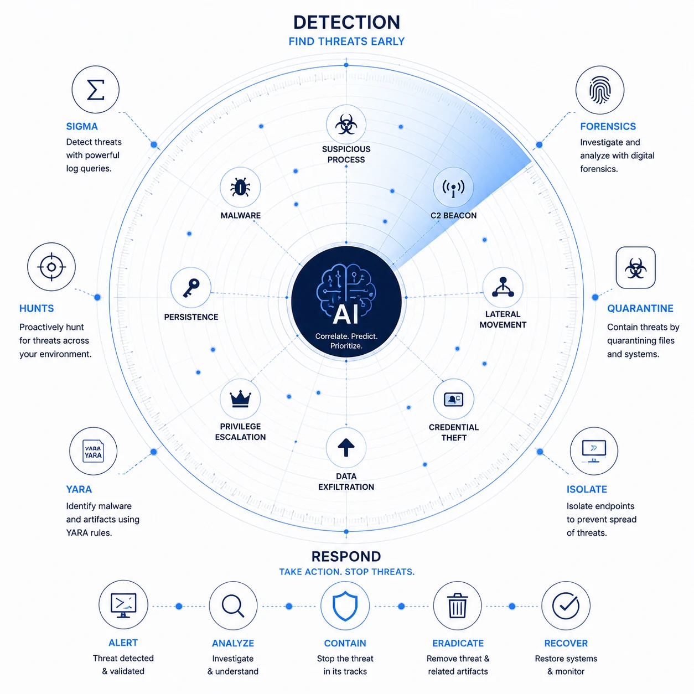

Purpose
Detection & Response project complements Malware Analysis Series which works at the level of the malware itself, the families, the TTPs and their detections. This project works at the level of the defence: scenarios or documented cases, detection engineering and the rules it produces, the tooling and methodologies that carry an investigation, and the AI integrations increasingly doing the heavy lifting. Two tracks, read either on its own.
The aim is practical knowledge the community can run, not just read. Every rule, artifact and query published here ships as a runnable file, so intel becomes a live hunt in the time it takes to copy a path.

Shayan Ahmed Khan · @shaddy43
Threat Researcher · Detection & Response · Offensive Tooling
# turning coffee into commits
My journey has taken me from offensive tooling and reverse engineering to SOC operations, enterprise DFIR and OT threat hunting. I enjoy understanding threats from both sides, how they are built, how they operate, and how to detect and defend against them.
Latest Posts
No posts match that filter.
From Alert to Answer: AI-Driven DFIR with Claude Code & Velociraptor
One Defender alert for a browser stealer, worked end to end by an AI analyst wired to Velociraptor over the Model Context Protocol. Writing the detection artifact, hunting the fleet, YARA-scanning the host, and reconstructing a masquerade attack across five forensic artifacts, right down to the byte-level quarantine match.
More field notes on the way…
Detection-as-code, hunt playbooks, and endpoint IR case studies.
Certifications
Buy Me A Coffee